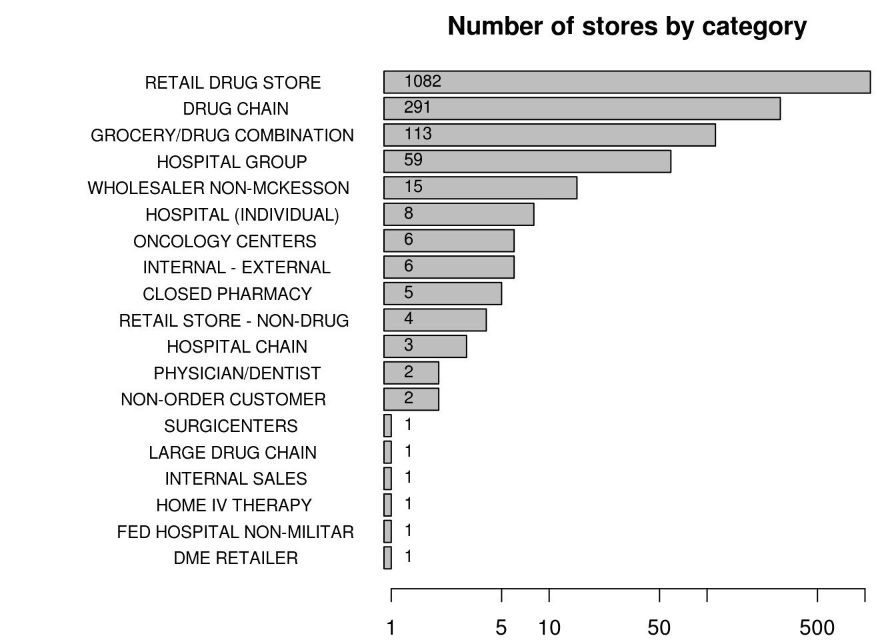
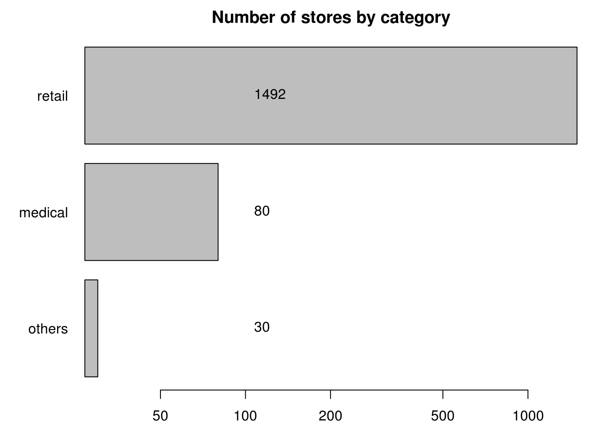

Set paths and load dependencies
## [1] "/mnt/hgfs/projects/insight/models/descriptive"Load store charactistics (type, zip) from MySQL DB.
## [1] TRUEhead(storeDf,3)## storeID DEA_NUM zip state busType
## 1 009001 AU7575852 99603 AK RETAIL DRUG STORE
## 2 349803 AA2284571 99737 AK HOSPITAL GROUP
## 3 944612 FH3645869 35058 AL DRUG CHAIN##
## RETAIL DRUG STORE DRUG CHAIN
## 1082 291
## GROCERY/DRUG COMBINATION HOSPITAL GROUP
## 113 59
## WHOLESALER NON-MCKESSON HOSPITAL (INDIVIDUAL)
## 15 8
## ONCOLOGY CENTERS INTERNAL - EXTERNAL
## 6 6
## CLOSED PHARMACY RETAIL STORE - NON-DRUG
## 5 4
## HOSPITAL CHAIN PHYSICIAN/DENTIST
## 3 2
## NON-ORDER CUSTOMER SURGICENTERS
## 2 1
## LARGE DRUG CHAIN INTERNAL SALES
## 1 1
## HOME IV THERAPY FED HOSPITAL NON-MILITAR
## 1 1
## DME RETAILER
## 1
storeDf$bizType=NA
storeDf$bizType[grep("drug|retail",storeDf$busType,ignore.case=T)]="retail"
storeDf$bizType[grep("hospital|center|physician",storeDf$busType,ignore.case=T)]="medical"
storeDf$bizType[grep("wholesale|internal|closed pharmacy|customer|home",storeDf$busType,ignore.case=T)]="others"
newNumStoresByType=sort(table(storeDf$bizType,useNA="ifany"))
par(mar=c(2,5,2,1))
bp=barplot(newNumStoresByType,horiz=T,log="x",las=1,cex.names=1,
main="Number of stores by category")
text(100,bp,newNumStoresByType,cex=1,pos=4)
Make indicator variables out of collapsed business types
#tmp=model.matrix(~ bizType, data=storeDf[1:100,])
storeTypeAsFeature=as.data.frame.matrix(xtabs(~ storeID + bizType, data=storeDf))
head(storeTypeAsFeature,3)## medical others retail
## 000026 0 0 1
## 000417 0 0 1
## 001172 0 0 1storeDf=merge(storeDf,storeTypeAsFeature,by.x="storeID",by.y=0)
head(storeDf,3)## storeID DEA_NUM zip state busType bizType medical
## 1 000026 AS6655104 81435 CO RETAIL DRUG STORE retail 0
## 2 000417 BC6202193 56201 MN GROCERY/DRUG COMBINATION retail 0
## 3 001172 BV0696154 81054 CO RETAIL DRUG STORE retail 0
## others retail
## 1 0 1
## 2 0 1
## 3 0 1Preview stores by region
head(store_state,3)## state Stores
## 1 AK 2
## 2 AL 7
## 3 AR 67head(store_county,3)## county Stores
## 1 01033 1
## 2 01043 1
## 3 01073 1head(store_zip,3)## zip Stores
## 1 01002 1
## 2 01005 1
## 3 01028 1m=gvisGeoChart(store_state,
locationvar="state", colorvar="Stores",
options=list(region="US", displayMode="regions",
resolution="provinces",
width=1000, height=600,
colorAxis="{colors:['#FFFFFF', '#0000FF']}"
))
plot(m)saves dataframes to data/storeChar.RData also output number of stores by county to “store_county.txt”
write.table(store_county,file="store_county.txt",sep="\t",row.names=F,quote=F)
save(store_state,store_county,store_zip,storeDf,file="../../data/storeChar.RData")